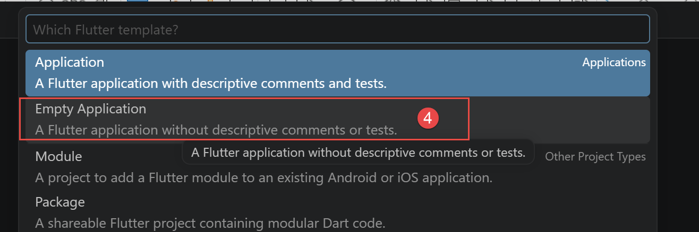
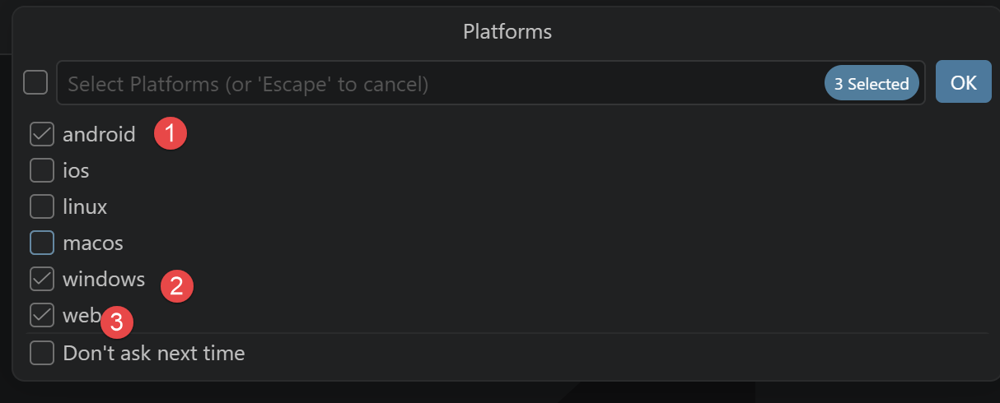
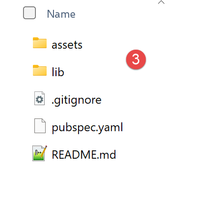
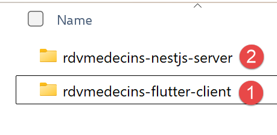
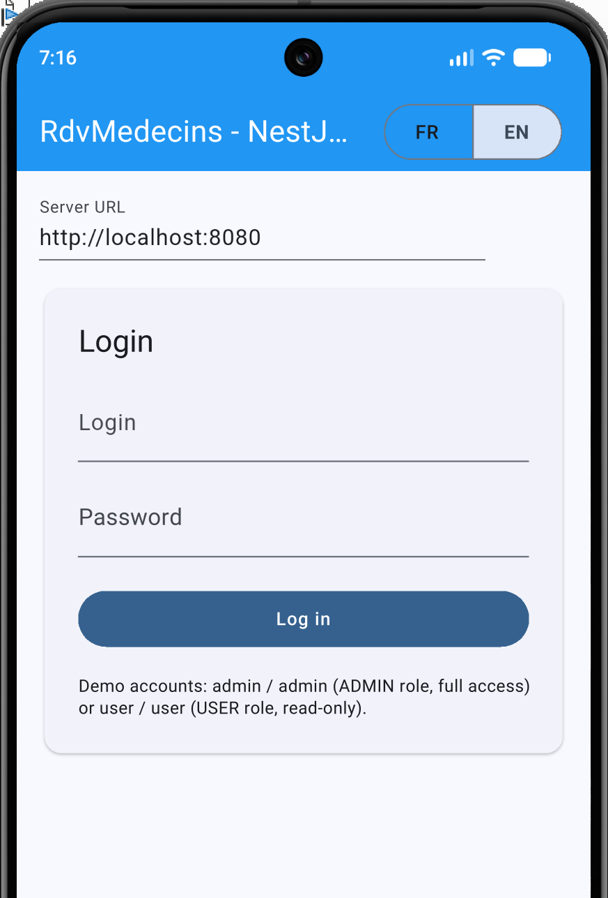

2. Kapitel 1 - Einrichtung der Arbeitsumgebung
2.1. Die Werkzeuge installieren
- Node.js: Laden Sie Version 22 (oder höher) von nodejs.org herunter und installieren Sie sie. Überprüfen Sie die Installation in einem Terminal:
- Visual Studio Code (VSCode): kostenlos erhältlich unter code.visualstudio.com. Installieren Sie die Erweiterung „TypeScript and JavaScript Language Features“ (in der Regel bereits enthalten).
- [MySQL] 8: Installieren Sie es zum Beispiel über XAMPP, Laragon (unter Windows) oder direkt über [MySQL] Community Server. Ein grafisches Verwaltungswerkzeug (phpMyAdmin, [MySQL] Workbench, DBeaver, HeidiSQL …) erleichtert die Arbeit. Im weiteren Verlauf wird das Werkzeug Laragon verwendet.
- Postman: kostenlos erhältlich unter postman.com.
2.1.1. Den Flutter-Client installieren
Starten Sie VSCode, ohne ein Projekt auszuwählen:

- Öffnen Sie in [1-2] die Befehlspalette;

- Erstellen Sie in [3] ein neues Flutter-Projekt;

- Erstellen Sie in [4] eine leere App;

- Geben Sie in [5-6] einen Ordner an, in dem der Projektunterordner angelegt wird;

- Geben Sie in [6] einen Namen für das Projekt ein. Dies ist auch der Name des für das Projekt angelegten Ordners;

- Legen Sie in [1-3] die Ziele des Projekts fest: [1 – Android application, 2 – desktop application, 3 – web application];

- In [4] sehen Sie das erstellte Projekt. VSCode lädt das Flutter SDK automatisch herunter;
Wenn Sie den Code dieses Dokuments heruntergeladen haben, befindet er sich in zwei Ordnern:


- in [1] der Client [Flutter];
- in [2] der [NestJS]-Server;
- in [3] der Inhalt von [2]. Kopieren Sie diesen gesamten Inhalt in den Ordner Ihres Flutter-Projekts. In Ihrem Projekt erscheinen neue Elemente:

Der Befehl [flutter doctor] prüft Ziel für Ziel, ob alles vorhanden ist, was [Flutter] benötigt. Führen Sie ihn in einem Terminal innerhalb des Flutter-Projekts aus:
Wenn alles in Ordnung ist, erhalten Sie ein Ergebnis wie das folgende (die Versionsnummern können abweichen):
Jede Zeile beginnt mit einem Symbol: [√] (alles in Ordnung), [!] (Warnung: Ein Element fehlt, was die Funktion des Codes nicht unbedingt beeinträchtigt) oder [X] (Fehler). Für diesen Kurs sind die Zeilen [Flutter], [Android toolchain] (Kompilierung für ein [Android]-Smartphone) und [Connected device] (mindestens ein erkanntes Gerät, konkret das Smartphone) relevant. Die Zeilen [Chrome] (Webziel) und [Visual Studio] (Windows-Ziel) betreffen nur diese Ziele: Ein [!] oder [X] bei einem Ziel, das Sie nicht verwenden, können Sie ignorieren.
Wenn [Android toolchain] die Meldung „cmdline-tools component is missing“ ausgibt, installieren Sie die [Android SDK Command-line Tools] (siehe unten); bei der Meldung „Android license status unknown“ akzeptieren Sie die Lizenzen (Schritt 5). Der Befehl [flutter doctor -v] liefert Details zu jeder Prüfung.
Sie können die Flutter-Anwendung nun auch dann starten, wenn der Webdienst, mit dem sie kommunizieren muss, nicht gestartet wurde. Listen Sie zunächst die von Flutter erkannten Geräte (devices) auf:
In Spalte 2 finden Sie die Kennungen der erkannten Geräte. So starten Sie die Flutter-Anwendung auf einem davon:
Um die Anwendung beispielsweise im Browser Chrome mit der Kennung (chrome) zu starten:
Dies führt zu folgendem Ergebnis (oder zu einem Fehler bei der Serververbindung):

Möglicherweise haben Sie das von Flutter benötigte Android SDK noch nicht installiert. Wir beschreiben nun, wie es installiert wird.
2.1.2. Android Studio und Android-Befehlszeilenwerkzeuge
Das mobile Ziel dieses Kurses ist ein [Android]-Smartphone. Um die Anwendung zu kompilieren und auf diesem Smartphone zu installieren, benötigt [Flutter] das [Android]-SDK, das zusammen mit [Android Studio], der Entwicklungsumgebung von Google, installiert wird. [Android Studio] dient nicht zum Schreiben von Code – der Editor bleibt [VSCode] –, sondern wird hier nur verwendet, um das [Android]-SDK zu installieren und zu aktualisieren.
- [Android Studio]: Laden Sie es kostenlos von [https://developer.android.com/studio] herunter und installieren Sie es. Beim ersten Start bietet der Assistent eine Standardinstallation an: Akzeptieren Sie sie, dann lädt er das [Android]-SDK herunter.

- Öffnen Sie den [SDK Manager] in [Android Studio] (über das Menü [Tools / SDK Manager], wenn ein Projekt geöffnet ist, oder über [More Actions / SDK Manager] auf dem Startbildschirm): Dies ist das Werkzeug, das die Komponenten des [Android]-SDK installiert und aktualisiert.
- Registerkarte [SDK Platforms]: Prüfen Sie, ob eine aktuelle [Android]-Plattform installiert ist (die Dokumentation von [Flutter] nennt zum Zeitpunkt der Erstellung Version 36).

- Registerkarte [SDK Tools]: Aktivieren Sie [Android SDK Command-line Tools (latest)], [Android SDK Build-Tools] und [Android SDK Platform-Tools] (sowie [Android Emulator] , wenn Sie auf einem Emulator testen möchten) und klicken Sie dann auf [Apply]. Die Dokumentation von [Flutter] empfiehlt außerdem [CMake] und [NDK (Side by side)]. Es sind die Pakete [Android SDK Command-line Tools], die fehlen, wenn [flutter doctor] „cmdline-tools component is missing“ anzeigt.
- Akzeptieren Sie die Lizenzen für das [Android]-SDK , indem Sie den folgenden Befehl in einem Terminal innerhalb des Flutter-Projekts eingeben und dann jede Frage mit „[y]“ beantworten, bis die Meldung „All SDK package licenses accepted.“ erscheint:
[Note]: Mit Version 23.0 der [Android SDK Command-line Tools] kann der obige Befehl sofort und ohne Rückfrage beendet werden und die Meldung „The --licenses option is no longer needed.“ ausgeben. Dies ist ein bekanntes Problem in [Flutter] (Issues 191558 und 191487 auf github.com/flutter/flutter). Abhilfe: Aktivieren Sie im [SDK Manager] auf der Registerkarte [SDK Tools] die Option [Show Package Details], ersetzen Sie Version 23.0 der [Android SDK Command-line Tools] durch Version 22.0, klicken Sie auf [Apply], und führen Sie den Befehl dann erneut aus.
2.1.3. Einen Android-Emulator erstellen
Wenn Sie kein Smartphone besitzen, können Sie die Anwendung auf einem [Android]-Emulator testen: einem virtuellen Smartphone, das in einem Fenster auf Ihrem Computer läuft. [Android Studio] installiert das Programm [Android Emulator] (sofern es im [SDK Manager] aktiviert war, siehe oben), stellt aber kein einsatzbereites virtuelles Gerät bereit: Sie müssen eines erstellen.
- [Prerequisite]: Im [BIOS] des Computers muss die Virtualisierung aktiviert sein, und unter [Windows] muss das Feature [Windows Hypervisor Platform] aktiviert sein ([Control Panel / Programs / Turn Windows features on or off]); dazu ist ein Neustart erforderlich. Andernfalls startet der Emulator nicht oder bleibt sehr langsam.
- Öffnen Sie den [Device Manager] in [Android Studio]: [More Actions / Virtual Device Manager] auf dem Startbildschirm oder [Tools / Device Manager] bei geöffnetem Projekt (je nach Version: [View / Tool Windows / Device Manager]).

- Klicken Sie auf [Create Device], wählen Sie eine Vorlage aus (zum Beispiel [Pixel 8]) und dann [Next]. Wählen Sie ein aktuelles [Android]-Systemabbild für den Prozessor [x86_64] aus und laden Sie es über den Link [Download] daneben herunter, dann [Next] und [Finish].


- Starten Sie den Emulator mit der Schaltfläche [Play] im [Device Manager] oder über ein Terminal (der erste Befehl listet die Emulatoren und ihre Kennungen auf):

- Warten Sie, bis der [Android]-Begrüßungsbildschirm im Emulatorfenster erscheint: Der erste Start kann mehrere Minuten dauern. Prüfen Sie dann, ob [Flutter] den Emulator erkennt, der in der Liste erscheinen sollte (zum Beispiel [emulator-5554], Plattform [android-x64]):
[Note]: Wenn [flutter devices] den Emulator nicht anzeigt, sondern die Meldung „Device emulator-5554 is offline“ ausgibt, ist der Emulator noch nicht vollständig gestartet, oder [adb] (das Werkzeug, das den Computer mit dem Gerät verbindet und zusammen mit den [Android SDK Platform-Tools] installiert wird) befindet sich in einem inkonsistenten Zustand. Versuchen Sie der Reihe nach Folgendes: (1) Warten Sie, bis der Begrüßungsbildschirm erscheint, und führen Sie den Befehl dann erneut aus; (2) starten Sie [adb] mit den folgenden drei Befehlen neu (unter [Windows] in [PowerShell]), wobei der letzte „device“ statt „offline“ anzeigen sollte; (3) wählen Sie im [Device Manager] im Menü [⋮] des Geräts [Cold Boot Now] oder als letztes Mittel sogar [Wipe Data].
Wenn das Problem weiterhin besteht, prüfen Sie mit [where.exe adb], dass sich kein anderes [adb] in einer anderen Version im [PATH] befindet: Zwei Versionen von [adb] , die um die Verbindung konkurrieren, verursachen dieses Problem.
Sobald der Emulator erkannt wird, starten Sie die Anwendung mit dem folgenden Befehl darauf. Achtung: Im Emulator bezeichnet [localhost] den Emulator selbst und nicht den Computer; das Feld „Server-URL“ muss [http://10.0.2.2:8080] enthalten (siehe Kapitel 5).

2.1.4. Das Android-Smartphone vorbereiten
Um die Anwendung auf einem echten [Android]-Smartphone auszuführen, muss das Smartphone so eingestellt sein, dass es sich vom Computer aus steuern lässt:
- Aktivieren Sie die Entwickleroptionen: Öffnen Sie [Settings / About phone] und tippen Sie dann mehrmals (in der Regel 7-mal) auf [Build number], bis das Smartphone anzeigt, dass Sie Entwickler sind. Die genauen Bezeichnungen variieren je nach Hersteller.
- Aktivieren Sie [USB debugging] im Menü [Developer options] (im vorherigen Schritt hinzugefügt).
- Verbinden Sie das Smartphone über ein USB-Kabel mit dem Computer, das Daten überträgt (und nicht nur das Smartphone lädt), und akzeptieren Sie auf dem Smartphone die Anfrage zur Berechtigung für das USB-Debugging. Falls das Smartphone unter Windows nicht erkannt wird, installieren Sie den USB-Treiber des Herstellers („OEM USB drivers“, siehe [https://developer.android.com/studio/run/oem-usb]).
- Prüfen Sie, ob [Flutter] das Smartphone erkennt: Es sollte in der Liste erscheinen, die der folgende Befehl ausgibt, zusammen mit der Plattform [android]:
Das Smartphone greift auf den [NestJS]-Server über die IP-Adresse des Computers im lokalen Netzwerk zu (und nicht über [localhost]): Diese Konfiguration wird in Kapitel 5 beschrieben.